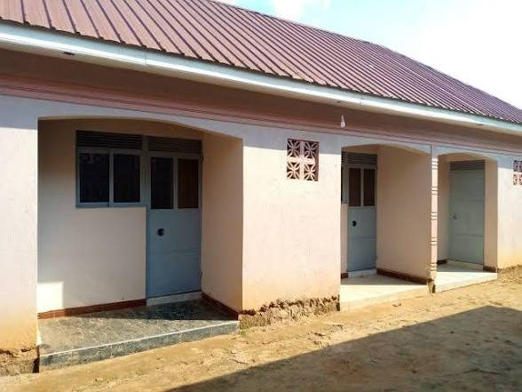

About HostelConnect Uganda

Why this site exists
Most Ugandan public universities can house only a small share of their students. Makerere's halls hold about 4,400 undergraduates, around 10%. Kyambogo can house about 1,400 students out of more than 33,000. Everyone else rents privately, often using information from WhatsApp groups, Facebook posts and noticeboards.
HostelConnect Uganda puts the key facts in one place so students can compare options before walking from door to door.
Who it helps
- Students who need clear prices, room types and facilities.
- Parents and guardians who want to find safe, fairly priced accommodation.
- Hostel owners and caretakers who want students to find them easily.
Open to every university
The site is not tied to one campus. Students from Makerere, Kyambogo, MUBS, Victoria University, Uganda Christian University and others can all use it.
Where the information comes from
The first listings come from the Victoria University Office of the Dean of Students list of accommodation options (2026). Send us a hostel or a correction.